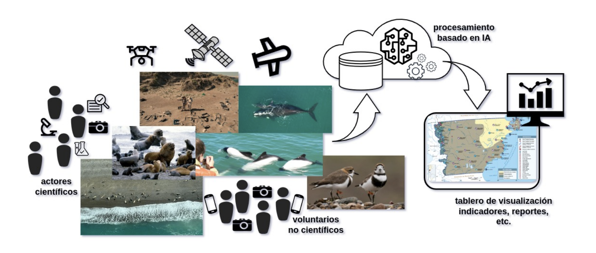

Remote detection, surveying, and population assessment of sea and land fauna, in Protected Natural Areas of the Chubut province (Argentina)
This project is funded by the Science, Technology, and Innovation Ministry of Argentina, and is fully aligned with the Sustainable Development Goals (SDGs) promoted by UNESCO. The aim is to streamline the processes of establishing sound indicators to evaluate the demographic dynamics of terrestrial and marine wildlife for various purposes (scientific, environmental, touristic, etc.), reduce costs, and reuse data (images/videos) for multiple purposes. It also seeks to facilitate systematic monitoring of different species, identify critical habitats, and detect and assess both natural and anthropogenic impacts. This information is required in formulating management and impact mitigation plans, and making decisions in biodiversity conservation policies, sustainable use of natural resources, and sustainable development. This project represents a technological advancement to improve the efficiency, speed, and accuracy of the data obtained and has the potential to be scalable and adaptable to different geographical regions and objects of study.
The management and conservation of resources for scientific, tourism, production, and conservation purposes require accurate indicators to evaluate biological, environmental, and anthropogenic dynamics, among others. Population dynamics and biodiversity of endemic or threatened species (both terrestrial and marine), for instance, are currently understood through censuses that tend to be logistically complex and costly for large geographic scales. Various stakeholders regularly conduct data acquisition campaigns (e.g., flights or photographic campaigns) and process the information in the office. This information, apart from being expensive, requires extensive specialist supervision and is not interoperable. Alternatively, Artificial Intelligence (AI), image processing, and data science offer advanced research methods and innovative technologies that allow for the extraction and availability of this information while keeping it up-to-date and accessible. This approach has the potential to be useful for managing indicators related to fauna, flora, anthropogenic factors, etc., positively impacting biological, ecological, environmental studies, and the productive sector.
These intelligent image processing techniques allow for the inference and automatic generation of semantic content from images, which has a wide range of applications in tasks like description, content extraction, classification, counting, among others. These techniques have experienced significant advancements due to considerable improvements in hardware, with more powerful processors and higher-capacity, lower-cost storage media. In turn, libraries of open-source repositories, high-level machine learning libraries, source code hosting and collaboration platforms, developer query forums, AI-based assistants, public datasets for data-driven trainings, have greatly enabled and expanded the application of these advancements with significant success in a wide variety of contexts and intervention areas. Digital photography has benefited characterization, recognition, surveying, and monitoring work, thanks to its low cost and the ability to obtain instant images from multiple sources.
This project aims to streamline the processes of establishing indicators to assess the demographic dynamics of terrestrial and marine wildlife for various purposes (scientific, environmental, tourism, etc.), reduce their costs, reuse data (images/videos) for multiple purposes, facilitate systematic monitoring of different species, identify critical habitats, and detect and evaluate impacts, both natural and anthropogenic. To this end, algorithms are being researched to automate data management (images and videos) in the unsupervised detection of various study objects. The systematically obtained information will subsequently be used to generate infographics, dashboards, and reports of scientific, ecological, and governmental interest. This will be useful for monitoring, formulating management and impact mitigation plans, and making decisions in biodiversity conservation policies, sustainable use of natural resources, and sustainable development. It will also lay the groundwork for future ecological and environmental studies, in conjunction with other strategic scientific research, including exploration and conservation activities. This development represents a technological advancement to enhance the efficiency, speed, and accuracy of the obtained data and has the potential to be scalable and adaptable to different geographic regions and study objects.
The current proposal involves the development of software using intelligent image processing techniques. This software will be trained to detect, identify, and survey multiple targets of interest for various stakeholders in the Chubut province (scientific community, regulatory authorities, NGOs, etc.). These outcomes will not only streamline data collection and analysis tasks but also enable the reuse of existing resources, proper planning of new collections, and obtaining precise and reliable indicators over time, enhancing the quality of indicators used in various activities.
The main objective of the project is to systematize and unify the extensive data collection from diverse sources to create a comprehensive technological platform of indicators that facilitate resource monitoring over time. This platform should serve as input for management and contingency decisions, spatial planning, and conservation. The specific objectives are as follows:
- Initial acquisition and compilation of images and videos from various sources: satellite images, aerial images (e.g., manned and unmanned aircraft), videos, and images from scientific and citizen sources.
- Generation of datasets for training, validation, and testing models based on the above.
- Development of image and video analysis models to automate the survey of multiple targets (e.g., wildlife, human activities, anthropogenic interventions) using contemporary machine learning and deep learning technologies.
- Training these models for possible required indicator types.
- Generation of visualization products, dashboards, and standard reports for integration with other computer systems.
Methodology
The initial collection of images and videos will be obtained from aerial surveys of various indicators of interest in suitable sectors and moments, covering transects over protected natural areas in the Province (Wildlife Reserves in Península Valdés, Punta Loma, Punta León, and Punta Tombo). For example, when detecting and surveying wildlife, information about sectors with higher animal densities during key stages of the life cycle of various species will be considered. For other productive indicators of tourism interest, such as visitor flow and recreational or sports activities, key dates like holidays, tournaments, competitions, etc., will be considered at popular sites. The aerial surveys will be conducted through private flights from a four-seat LV-JDZ Cessna C-182 aircraft and some of these sectors will also be surveyed using unmanned aerial vehicles.
These surveys will be used for training and validating models. The survey routes (distance/duration) will be subject to the autonomy of the equipment, which could be affected by changes in weather conditions. Operational conditions (flight altitude, approach to targets) will comply with current regulations. Some satellite images of the areas and dates of interest will be provided by the National Commission for Space Activities (CONAE) through a specific agreement. Video materials and images from scientific studies and/or the public domain (citizen science) will also be integrated into this resource.
For managing and supporting analysis material, a storage technology infrastructure (hardware/software) will be configured, allowing for the extraction of associated information (spatial and temporal metadata, technical capture data, etc.). This material will undergo exploration, sorting, and data cleaning to form datasets, which will be used for manual annotations and marking tasks of objects of interest using computer tools designed for this purpose. Once these datasets with corresponding annotations are formed, open-source components will be used to design, develop, and train detection and information extraction models (e.g., automated detection, determination, and counting of species, sex, age categories, photo identification, detection and counting of people in recreational sites and moments, identification of pollution factors or risks, among others).
Metrics will be established to measure and compare the results of the developed models, validating and testing them and making necessary adjustments. The obtained models will be used to process the datasets and store information in an accessible online platform. For generating products and displaying results, open-source components for visualization, exploration, and data analysis (georeferential, statistical, etc.) will be used. A geotemporal database will be designed and implemented, and software will be developed for the automatic generation of dashboards and standard reports for integration with other computer systems (e.g., heatmaps, integrable data layers), accessible through web services, browsers, or mobile applications.